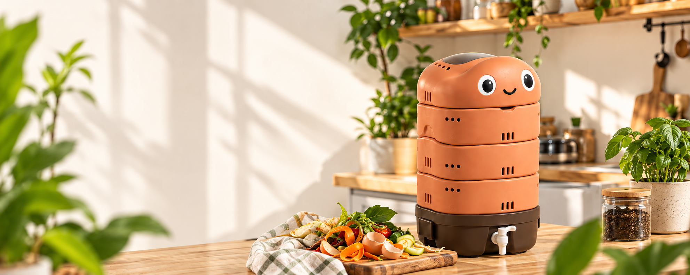
WORMI adalah komposter dapur mini dengan bantuan cacing untuk mengolah sisa sayur & buah jadi kompos. Praktis, bebas bau, dan cocok untuk rumah modern di kota.
Setiap hari, sampah organik dari dapur menumpuk di tempat pembuangan. WORMI membantu kamu mengubahnya menjadi kompos yang bermanfaat, langsung dari rumah.
Pelajari Lebih Lanjut →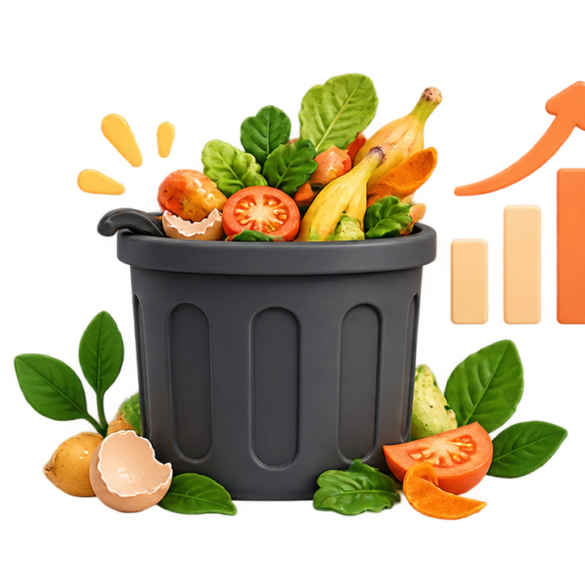
Sampah organik menyumbang porsi besar sampah rumah, tapi orang kota tak punya lahan.
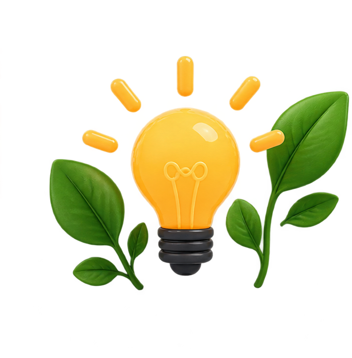
WORMI hadir praktis, bebas bau, dan mudah digunakan di ruang sangat terbatas.
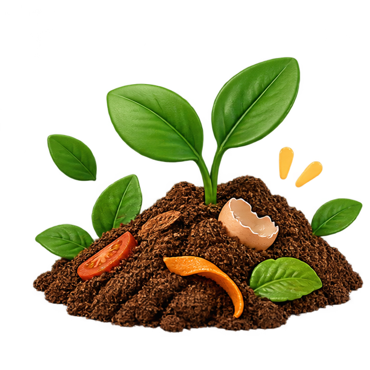
Mengurangi sampah ke TPA, menyuburkan tanaman, dukung gaya hidup berkelanjutan.
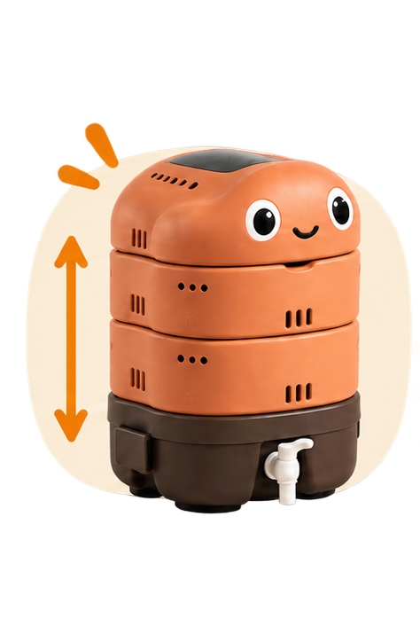
Kapasitas optimal dalam ukuran mini.
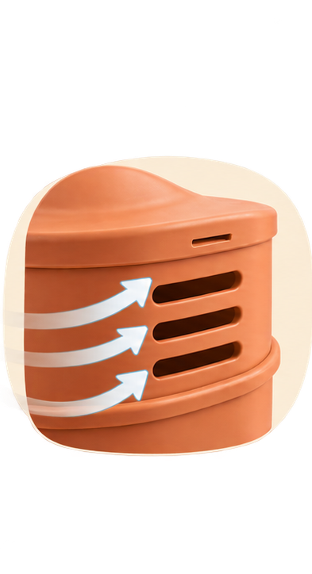
Menjaga proses pengomposan tetap sehat dan bebas bau.
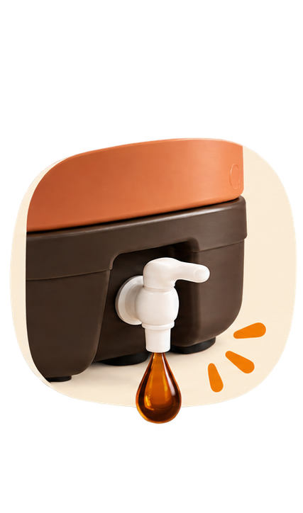
Air lindi tertampung rapi, tidak mengotori area.
Lucu, cocok untuk hiasan kos & rumah.
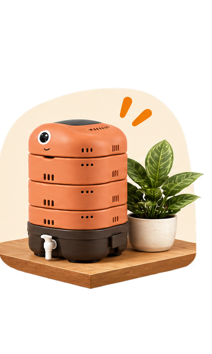
Hemat tempat, mudah disimpan di dapur/balkon.
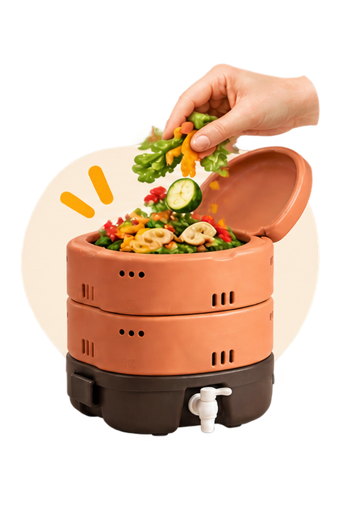
sisa sayur & buah
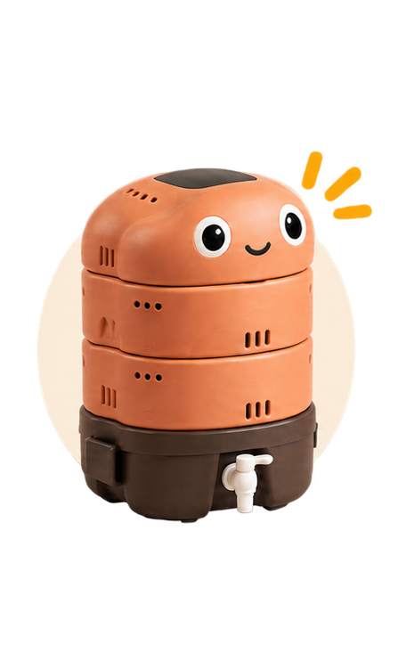
dan biarkan proses berjalan
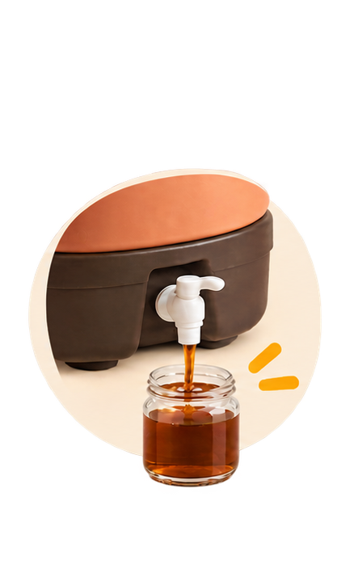
secara berkala (jika ada)
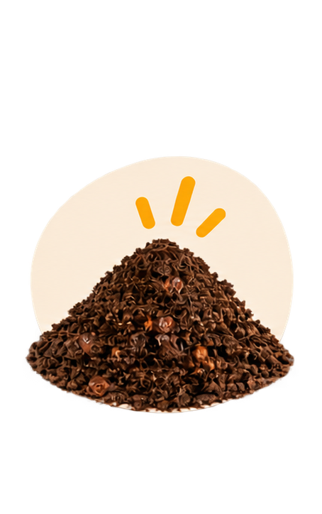
kompos siap digunakan
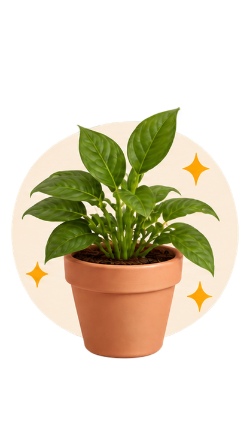
untuk tanaman kesayangan